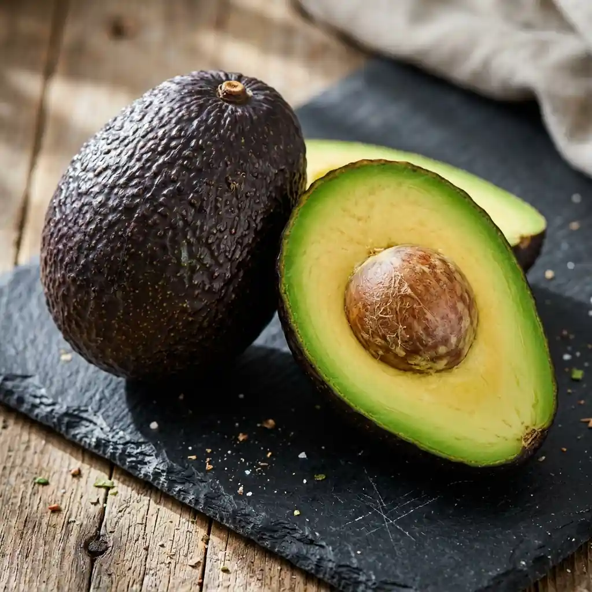
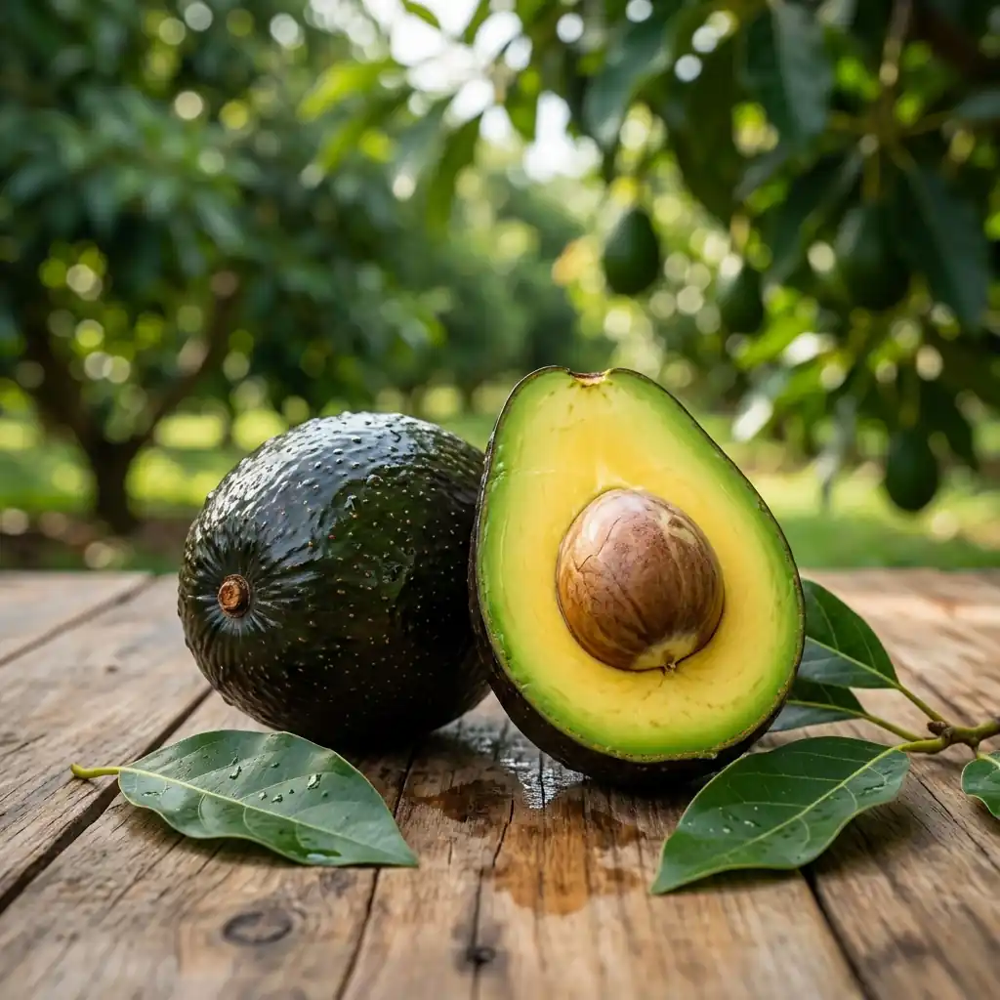
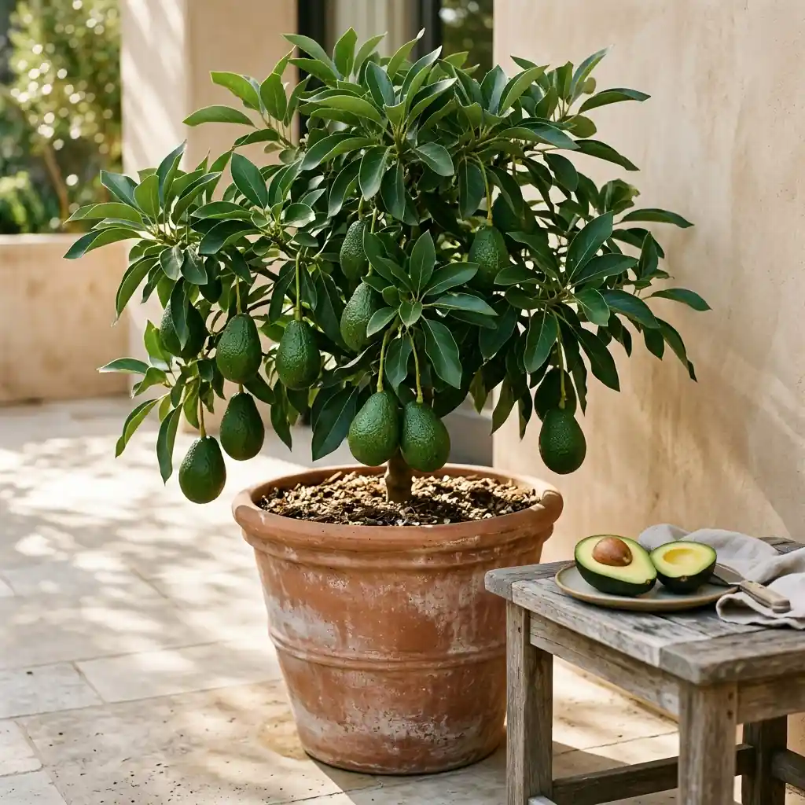
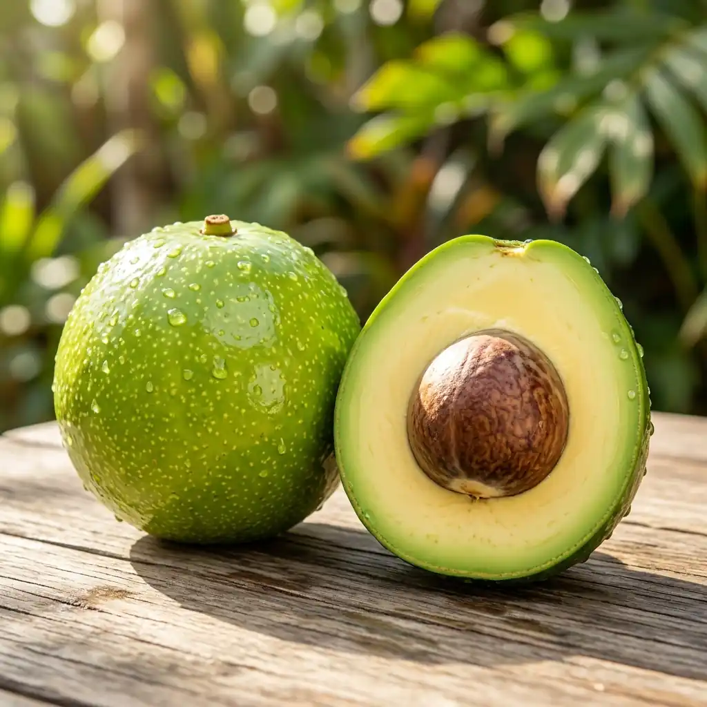

Tentang Varietas Alpukat Hass
Alpukat Hass merupakan varietas paling populer di dunia dan menjadi primadona ekspor internasional. Ciri khasnya adalah kulit berbintil yang berubah dari hijau gelap menjadi keunguan-hitam saat matang sempurna. Memiliki kadar lemak nabati sehat tertinggi dengan rasa buttery gurih yang sangat mewah.
Tertarik Menanam Alpukat Hass?
Dapatkan foto bibit aktual siap kirim dan konsultasi cara tanam.
Spesifikasi & Karakteristik Tanaman
| Ketinggian Optimal | 600 – 1.500+ mdpl (Dataran sedang hingga tinggi sejuk) |
|---|---|
| Bobot Buah Rata-rata | 200 – 350 gram / butir (Standar komersial internasional) |
| Tekstur & Citarasa | Sangat creamy buttery, gurih nutty khas, kadar minyak sangat tinggi |
| Estimasi Berbuah | 2.5 – 3.5 tahun |
| Daya Simpan | Sangat lama (tahan 2-3 minggu setelah petik) |
| Rekomendasi Tanam | Perkebunan komersial dataran tinggi, agrowisata, pekarangan sejuk |
| Nilai Pasar | Harga jual buah per kilogram tertinggi di pasaran modern |
Nilai Komersial & Daya Simpan Unggul
Alpukat Hass adalah komoditas dengan permintaan stabil di supermarket modern, restoran hotel, dan pasar ekspor. Kulitnya yang tebal berbintil melindungi daging buah dari kerusakan fisik selama perjalanan jauh dan membuatnya tahan simpan lama tanpa cepat membusuk.
Kandungan Nutrisi & Minyak Nabati
Diakui secara global sebagai sumber asam lemak tak jenuh tunggal yang sangat baik bagi kesehatan jantung. Teksturnya yang sangat lembut dan creamy menjadikannya bahan utama favorit untuk salad, guacamole, dan sajian kuliner kelas atas.
Syarat Tumbuh Optimal
Untuk mencapai kadar minyak dan warna kematangan hitam yang maksimal, bibit alpukat Hass sangat disarankan ditanam pada ketinggian minimal 600 mdpl dengan perbedaan suhu siang dan malam yang cukup sejuk.
Varietas Bibit Alpukat Terkait

Unggulan Dataran Rendah
Ukuran Jumbo 1+ Kg
Bentuk Bulat Eksotis